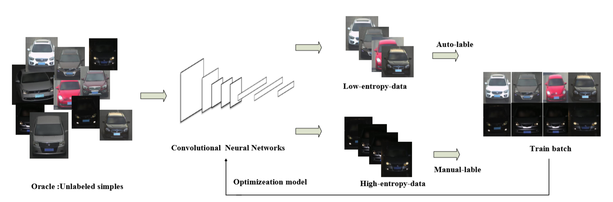

我实验室在期刊Trans. Vehicular Technology 再斩战果。我实验室硕士研究生王继天、硕士三年级研究生董成威的论文“Vehicle type recognition from surveillance data based on deep active learning”被Trans. Vehicular Technology接收。

当前，监控视频车辆类型检测在智能交通与计算机视觉领域受到了广泛的关注。基于深度学习的技术如CNN等在大尺度标注数据集下已经取得了长足的进展，但在实际应用中，人工标注费时费力，严重限制了基于CNN的车辆类型检测方法的应用场景。论文提出了一种基于主动学习的车辆类型检测算法，能够通过选取最有标注价值的未标注样本，人工标注后加入数据集重新训练从而有效降低标注冗余。此外，论文使用双向熵阈值策略，同时使用模型自动标注与人工标注的数据，进而提高模型对于简单样本与较难样本的学习能力。论文在公开数据集上对模型进行验证，证明了提出的模型框架较随机选择策略能够有效的降低标注开销。
IEEE Transactions. Vehicular Technology是与车辆技术有关的JCR2区期刊，影响因子4.612。
论文由丁兴号教授、黄悦教授共同指导。该论文的发表是我实验室在机器学习领域常年耕耘的又一突破性收获。